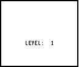

| HOME >> Tutorials >> Special Tutorial |
Introduction:
Ever wondered how those programmers make games like Nibbles using TI-BASIC programming? Well, in this tutorial, I will show you exactly how that's done. After finishing the tutorial, you should be able to make your own Nibbles game or something similar. Also, at the end of the tutorial is a game created by Ben Grunwald, which uses all of the aspects of programming that I'm going to show you in this tutorial. I decided to add this tutorial in with the set of three tutorials on getKey because that's what it mostly pertains to. I could have added it in the Version 3.0 tutorials, but most of those have a general theme, and this tutorial does not follow that at all.
New Command:
| Ans | Returns the value of the last answer |
The Codes:
This tutorial on how to make the game at the end is broken up into three sections. The first section covers the use of Ans. The second discusses how to use continual motion (this term will be explained) in a game. The final section goes over collision (hit) detection. These three sections well help you understand how the game works.
More likely than not, even if you've never made a program in your life (well, obviously you have), you have used Ans before. You may not realize it, but you have. You most likely used Ans while doing mathematical computations on the home screen. The following is an example of some computation you might do. What we are trying to do is divide the quantity of 36 times 4 by 16, and then add 47: (36*4)/16 + 47.
Now for all you people who really know how to you use your calculator you could have inputted it like this, "(36*4)/16 + 47," but then I would not have been able to demonstrate the everyday use of Ans. The following code shows an example of how you would use Ans in a program. It is a simple quadratic formula program. The equation is x²-14x-51.
| : | For AShell, SOS, and TI-Explorer |
| Lbl 1 | |
| ClrHome | Clears the home screen |
| Disp "X²-14X-51=0 | Displays "X²-14X-51=0" on the top line |
| 1 |
Stores the coefficients into A, C, and B |
| Ans²-4AC |
Stores the difference of B² and 4*A*C into D |
| Stores the square root of D into E | |
| -B+Ans |
Stores the sum of E and the negative of B into F |
| Ans/2A |
F divided by two times A is stored into G |
| -B-E |
Stores negative B minus E into H |
| Ans/2A |
H divided by two times A is stored into I |
| Disp "",G,I | Displays a blank line and the roots of the quadratic equation |
This right here is Ans at its best. Of course, you could simplify it all in one line, but then when there be an example of the use of Ans? No there wouldn't. Anyway, let me explain the code. The reason I had B store as -14 last, instead of second, is so that I could use it for Ans in the next line when B is supposed to be squared. Actually, for most of them I really didn't have to store the computation into variables because they are not used again in the program. The only variable, besides A, B, & C that I had to store into was E because I reference it twice. If I were to use Ans instead of E in "-B-E H," then it would actually use the value of G and not E, because G was the last computation made. The reason programmers use Ans instead of variables is because the calculator accesses values from Ans quicker than from user variables. In this type of program, it really does not matter, but in a game, it's vital. In the next code, I'll show you how to make a "snake" move by itself (continual motion). All you have to do is direct it.
H," then it would actually use the value of G and not E, because G was the last computation made. The reason programmers use Ans instead of variables is because the calculator accesses values from Ans quicker than from user variables. In this type of program, it really does not matter, but in a game, it's vital. In the next code, I'll show you how to make a "snake" move by itself (continual motion). All you have to do is direct it.
| : | For AShell, SOS, and TI-Explorer |
| Lbl 1 | |
| AxesOff | Turns the graph axes off |
| FnOff | Deselects all the Y= functions |
| ClrDraw | Clears the graph screen |
| 26 |
Its initial direction (the right arrow's key code) |
| 48 |
The x-coordinate of its starting point |
| 32 |
The y-coordinate of its starting point |
| While 1 | |
| Pxl-On(Ans,B | Draws a pixel at (A,B) |
| getKey | Stores the key's key code into Ans |
| If Ans:Ans |
If a key was pressed then store the key code into R |
| B-(R=24)+(R=26 |
Moves the snake right/left depending on keypress |
| A-(R=25)+(R=34 |
Moves the snake up/down depending on keypress |
| End | End of While loop |
Possible Output:
Before I explain anything, just run the program and see what it does... As you can see, the "snake" moves by itself. We don't have to hold down on the right button for it to go right. The only time you have to press one of the directional buttons is when you want to change the direction of the "snake." Now lets analyze the code. In this code, R determines the direction of the snake. R is initially set at 26, which is the key code for the right directional button, that's why it starts off going right. The values that B & A are set to are just their initial coordinates. "Pxl-On(Ans,B" just plots a pixel at (A,B). We can use Ans instead of A because A was the last computation made, "32 A." In the next line, getKey is by itself, so the key code is just stored into Ans (this is more thoroughly explained in the further definition of Ans). The next line was the line that gave me the most trouble; it took me the longest to understand. The first part, "If Ans" somehow says "If a key was pressed." Don't ask me how it does this, but it just does. It would be the same thing as saying "If Ans
A." In the next line, getKey is by itself, so the key code is just stored into Ans (this is more thoroughly explained in the further definition of Ans). The next line was the line that gave me the most trouble; it took me the longest to understand. The first part, "If Ans" somehow says "If a key was pressed." Don't ask me how it does this, but it just does. It would be the same thing as saying "If Ans 0" because when a key isn't pressed, getKey returns 0. Therefore, the whole line simply reads, "If a key is pressed store its key code into user variable R. If not, store 0 into R." The next two lines are why the continual motion works. The program starts of with R being 26. If no key is pressed, how does the snake keep on moving to the right? It's because of R. When the While loop is just started a pixel is drawn at (A,B) or (32,48). A key hasn't been pressed and R is 26, so B is increased by one. Then the program goes back to the beginning and draws the pixel at (A,B), but this time the B is one more than it was before because of the "B-(R=24)+(R=26
0" because when a key isn't pressed, getKey returns 0. Therefore, the whole line simply reads, "If a key is pressed store its key code into user variable R. If not, store 0 into R." The next two lines are why the continual motion works. The program starts of with R being 26. If no key is pressed, how does the snake keep on moving to the right? It's because of R. When the While loop is just started a pixel is drawn at (A,B) or (32,48). A key hasn't been pressed and R is 26, so B is increased by one. Then the program goes back to the beginning and draws the pixel at (A,B), but this time the B is one more than it was before because of the "B-(R=24)+(R=26 B." B is now 49, instead of 48, so the snake seems to have moved one pixel to the right. Then in the next two lines the calculator checks if a key was pressed. If a key wasn't pressed then it doesn't store anything into R, so R is still 26 (the right directional arrow's key code). So when it goes to the next line "B-(R=24)+(R=26
B." B is now 49, instead of 48, so the snake seems to have moved one pixel to the right. Then in the next two lines the calculator checks if a key was pressed. If a key wasn't pressed then it doesn't store anything into R, so R is still 26 (the right directional arrow's key code). So when it goes to the next line "B-(R=24)+(R=26 B," B is again increased by one because R is still 26. B is now 50, instead of 49. Then the calculator loops back around to the beginning and draws the pixel at (32,50). So now, there are pixels drawn at (32,48), (32,49), and (32,50) and we still haven't pressed a button. The snake is moving by itself!! If this were to continue ten more times, there would be pixels drawn at (32,48), (32,49), (32,50), (32,51),..., and at (32,60), and we still haven't pressed a button. If a directional button, let's say the down button, was to be pressed, then R would now become 34. The next point is then drawn at (33,60). If the calculator runs through the entire loop and a key wasn't pressed, then the next point would be drawn at (34,60) and so on. Do you see how it works? It's a bit complicated, but it's actually pretty simply done. If you still don't understand and are a bit (or a lot) confused, just contact me and I'll give more explanation. The only problem with the code above is that it allows the snake to cross over itself and you get an error message (ERR:DOMAIN) if you run into the sides of the screen. To fix this, we need to come up with some kind of hit detection. This is explained next. The next code and the previous one should seem similar.
B," B is again increased by one because R is still 26. B is now 50, instead of 49. Then the calculator loops back around to the beginning and draws the pixel at (32,50). So now, there are pixels drawn at (32,48), (32,49), and (32,50) and we still haven't pressed a button. The snake is moving by itself!! If this were to continue ten more times, there would be pixels drawn at (32,48), (32,49), (32,50), (32,51),..., and at (32,60), and we still haven't pressed a button. If a directional button, let's say the down button, was to be pressed, then R would now become 34. The next point is then drawn at (33,60). If the calculator runs through the entire loop and a key wasn't pressed, then the next point would be drawn at (34,60) and so on. Do you see how it works? It's a bit complicated, but it's actually pretty simply done. If you still don't understand and are a bit (or a lot) confused, just contact me and I'll give more explanation. The only problem with the code above is that it allows the snake to cross over itself and you get an error message (ERR:DOMAIN) if you run into the sides of the screen. To fix this, we need to come up with some kind of hit detection. This is explained next. The next code and the previous one should seem similar.
| : | For AShell, SOS, and TI-Explorer |
| Lbl 1 | |
| AxesOff | Turns the graph axes off |
| FnOff | Deselects all the Y= functions |
| 0 |
You need to set the window |
| 94 |
variables because you will be using |
| 0 |
lines to make a border that will go |
| -62 |
along the edge of the screen |
| ClrDraw | Clears the graph screen |
| Horizontal 0 | Draws the line at the top of the screen |
| Vertical 0 | Draws the line on the left of the screen |
| Horizontal -62 | Draws the line at the bottom of the screen |
| Vertical 94 | Draws the line on the right of the screen |
| 26 |
Its initial direction (the right arrow's key code) |
| 48 |
The x-coordinate of its starting point |
| 32 |
The y-coordinate of its starting point |
| Repeat pxl-Test(Ans,B | Repeat until there's a pixel at the point to be drawn |
| Pxl-On(Ans,B | Draws a pixel at (A,B) |
| getKey | Stores the key's key code into Ans |
| If Ans:Ans |
If a key was pressed then store the key code into R |
| B-(R=24)+(R=26 |
Moves the snake right/left depending on keypress |
| A-(R=25)+(R=34 |
Moves the snake up/down depending on keypress |
| End | End of Repeat loop |
| ClrHome | Makes the program go back to the home screen |
Possible Output:
and then
Most of the command lines in this code are exactly the same as the previous code, so there shouldn't be too much to explain. The reason for having to outline the edge of the screen is so that the collision detection can work. You'll see why soon. So, do you think you know what makes collision detection work? Well if you guess this line, "Repeat pxl-Test(Ans,B," then you're absolutely correct. This could have also been written like "Repeat pxl-Test(Ans,B)=1," but we want to save space, right? What this does is repeat everything inside the loop until the point (A,B) is already drawn. The coordinates for the point that is to be drawn is determined by the last two lines before the End statement (you should already know that). So after those lines, we now have a point (A,B). However, before the program loops back around to draw that point, the Repeat command checks to see if that point has already been drawn (either by the snake itself of the edge of the screen). If a point has already been drawn at (A,B), then the loop is ended and the program finishes. If not, then the loop continues on and draws the next point as normal. You might realize the necessity of the outlining of the screen. This way, if the snake was to head toward the screen, the Repeat loop would see that there's already a point drawn at (A,B) and stop. If we didn't outline the edge of the screen we would get an "ERR:DOMAIN," which would kill program flow and execution and stop the play of the game you've made. Do you see how the collision detection works? It's actually fairly simple, really. However, if you still not quite grasping the concept, you can contact me anytime and I'll reply as soon as possible. If you have completely understood everything so far (congratulations!), then you're ready to take a look at Ben Grunwald's game. It's actually very similar to the last code except that it sets up random barriers that you cannot run into or the game is over. I'll only comment lines that I haven't gone over specifically in this tutorial.
Note: Some of the code has been changed so that you'll be able to understand everything without much explanation and so that there are no new commands.
| : | |
| Lbl 1 | |
| AxesOff | |
| FnOff | |
| 0 |
|
| 94 |
|
| 0 |
|
| -62 |
|
| ClrDraw | |
| DelVar P | |
| 50 |
|
| Lbl C | |
| DelVar L | |
| P+1 |
Increase the level number by one |
| Text(40,30,"LEVEL: | |
| Text(40,64,Ans | |
| Pause | |
| ClrDraw | |
| Horizontal 0 | |
| Vertical 0 | |
| Horizontal -62 | |
| Vertical 94 | |
| For(X,0,Q | |
| Pxl-On(randInt(1,61),randInt(1,93 | Draws 50 random points (obstacles) |
| End | |
| 26 |
|
| 48 |
|
| 32 |
|
| Repeat pxl-Test(Ans,B) or L=320 | Repeat until you hit something or beat the level |
| Pxl-On(Ans,B | |
| L+1 |
Keeps track how many pixels you've moved |
| getKey | |
| If Ans:Ans |
|
| B-(R=24)+(R=26 |
|
| A-(R=25)+(R=34 |
|
| End | |
| If L=320:Then | If you moved 320 pixels (won the level) |
| Q+100 |
Increase the number of obstacles to be drawn by 100 |
| Goto C | |
| End | |
| ClrHome | |
| Disp "YOUR DEAD","YOUR SCORE:",(P-1)320+L | |
| ClrDraw | |
Possible Output:
 and then 
This is what happens. You play the game and it's starts of telling you that you are at level 1. The calculator draws the border outlining the screen. Then the lines beginning with "For(X,0,Q," draw 50 random points used as obstacles on the screen. Q is initially stored at 50, so the For loop counts from 0 to 50. The line "Pxl-On(randInt(1,62),randInt(1,93," picks a random number for row and a random number for column so that the point that is drawn is random. You should automatically know everything from the end of the For loop to the End of the Repeat loop except for one line: "L+1 L." This is just like how we kept the number of trials back in our guessing game program. All is does is cound the number of pixels that the snake has moved. Once the snake has moved 320 pixels (Repeat pxl-Test(Ans,B) or L=320), the Repeat loop ends, you've won that level, and you go on to level 2. The game gets harder because the number of random points used as obstacles increases from 50 to 150. The "Goto C" makes it go back to the beginning of the program and everything is pretty much the same except that you're now in level 2 and the number of obstacle is higher. If the snake happens to either run into itself, the wall, or one of the obstacles, the Repeat loop also ends. The calculator checks to see if L is equal to 320 (it's not because you died early) so it skips that whole If-Then statement and goes to that displaying line where your score is displayed. That formula for the code is just a formula the Ben Grunwald made up for his game. If you have any major questions about how this game was made, you should contact Ben Grunwald instead of me. But just for the game. If you have questions about anything else in this tutorial, I am the one that you should consult.
L." This is just like how we kept the number of trials back in our guessing game program. All is does is cound the number of pixels that the snake has moved. Once the snake has moved 320 pixels (Repeat pxl-Test(Ans,B) or L=320), the Repeat loop ends, you've won that level, and you go on to level 2. The game gets harder because the number of random points used as obstacles increases from 50 to 150. The "Goto C" makes it go back to the beginning of the program and everything is pretty much the same except that you're now in level 2 and the number of obstacle is higher. If the snake happens to either run into itself, the wall, or one of the obstacles, the Repeat loop also ends. The calculator checks to see if L is equal to 320 (it's not because you died early) so it skips that whole If-Then statement and goes to that displaying line where your score is displayed. That formula for the code is just a formula the Ben Grunwald made up for his game. If you have any major questions about how this game was made, you should contact Ben Grunwald instead of me. But just for the game. If you have questions about anything else in this tutorial, I am the one that you should consult.
Conclusion:
Well that's it!!! With the information that you've have learnt from Tutorials 21 & 22 and this one, you should be able to make a pretty good game. Now you can make that Nibbles-like game you've always wanted to make. You can continue on to the last tutorial of the getKey series, Tutorial 23. There you'll be able to make awesome graph screen-based user-defined menus. These menus will make your games extremely unique. Once again, special thanks to Ben Grunwald for the idea for this tutorial.
If you do not understand a particular part in this lesson, have suggestions, or find any problems please contact me.
 |
 |
| Tutorial 22 | Tutorial 23 |